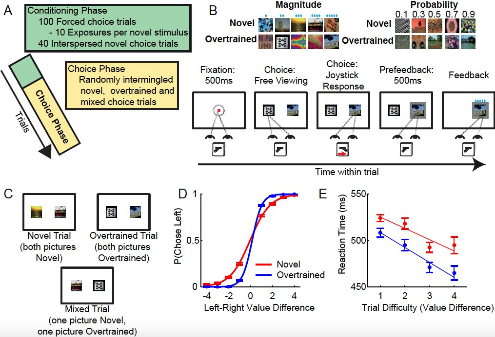
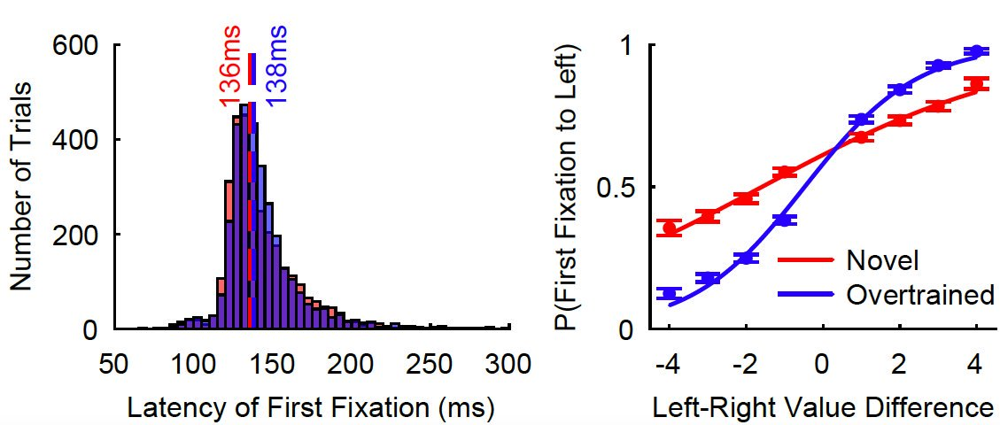
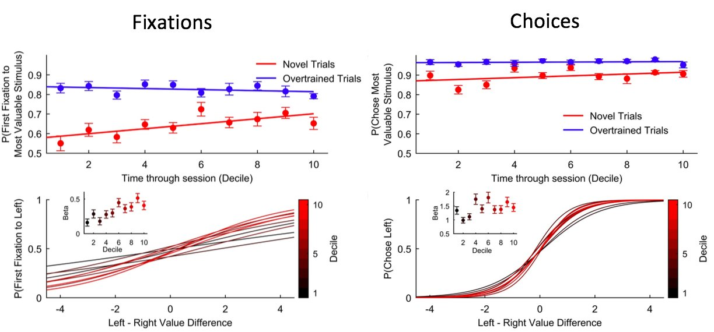
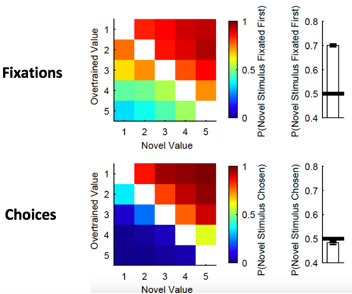

Fixation Patterns and Decision Making Project
Previous work has shown that where we direct our gaze can have a big impact on what we choose. However, where we choose to gaze during the decision process is not well-characterised, despite the important role it plays. We designed an experiment to investigate this. Participants made binary choices between reward predictive stimuli which were well-learned (overtrained), recently learned (novel), or a combination of both (mixed). They were free to look around the options and make a choice at any time with a joystick.

The first fixation participants made was fast (∼150 ms) but, surprisingly, its direction was value-driven (i.e. they looked at the best image first). This suggests covert evaluation of stimulus values prior to first saccade. This was particularly evident for choices between two overtrained stimuli:

For choices between two novel stimuli, first fixations became more value-driven across a session – as subjects gained more experience of the stimuli. However, this improvement lagged behind learning of accurate choices, suggesting separate processes governed the learning of fixations and choices:

A further dissociation between fixations and choices was shown on Mixed trials (i.e. choices between an overtrained and a novel stimulus) - there was a strong bias toward fixating the novel stimulus first, but no bias toward choosing it:

Our results suggest that the brain uses fast (150ms) covert mechanisms for guiding fixations toward highly valuable and novel information. By employing such covert mechanisms, fixation behavior becomes dissociable from the value comparison processes that drive choices.
To learn more about this work, please see the relevant publication:
Cavanagh, SE., Malalasekera, WMN., Miranda, B., Hunt, LT., & Kennerley, SW. (2019). Visual fixation patterns during economic choice reflect covert valuation processes that emerge with learning - PNAS [Link]